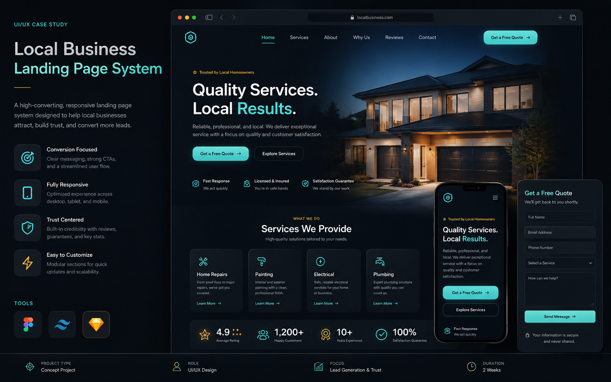
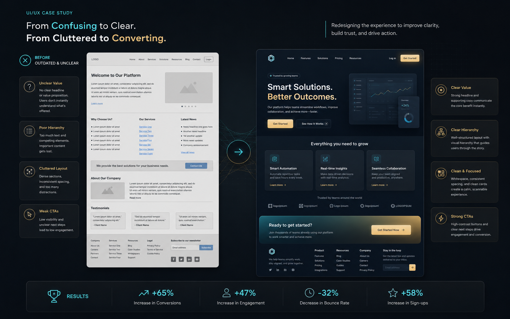
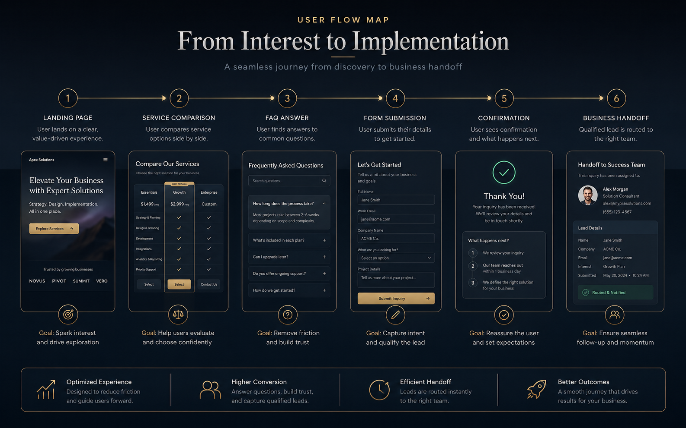
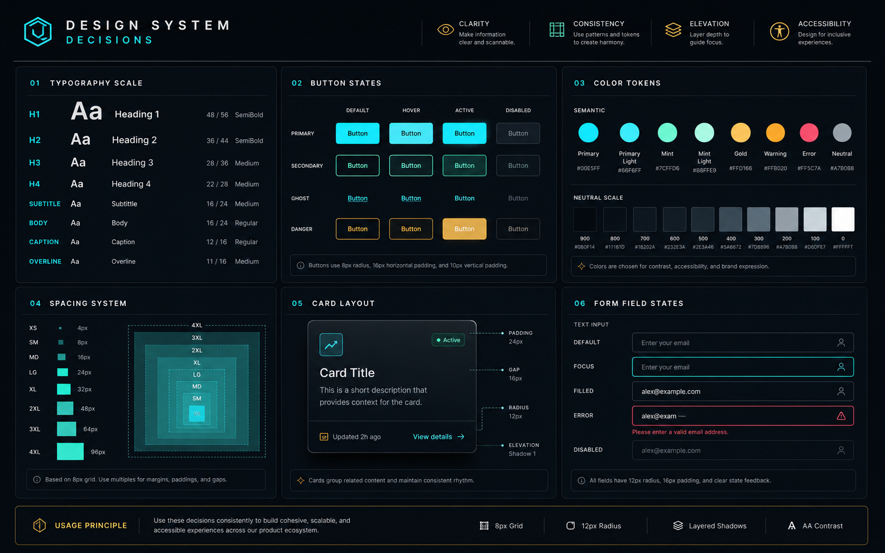

Concept Case Study
Local Business Landing Page System
A reusable landing page system for service businesses that need a premium first impression, clearer offers, and faster inquiry paths.




Problem
Many small business websites fail because visitors cannot quickly understand the service, trust the provider, or find the next action on mobile.
Target Users
Local customers comparing providers, business owners needing simple lead handling, and mobile visitors who want direct contact fast.
UX Goals
Clarify the offer, make CTAs visible, reduce scanning friction, and create a form/contact path that a small team can manage.
Design Solution
A modular landing page structure: hero, service cards, proof blocks, FAQ, lead form, and repeated contact CTAs with mobile-first spacing.
User Flow
Land on hero, scan services, check trust cues, read FAQs, submit the form, then receive confirmation or handoff instructions.
Outcome / Value
The concept gives a local business a cleaner presentation and gives visitors a faster path from interest to inquiry without claiming fake client results.